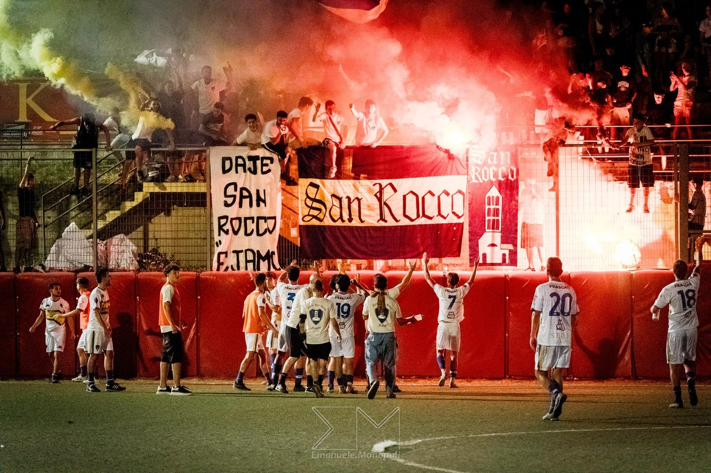
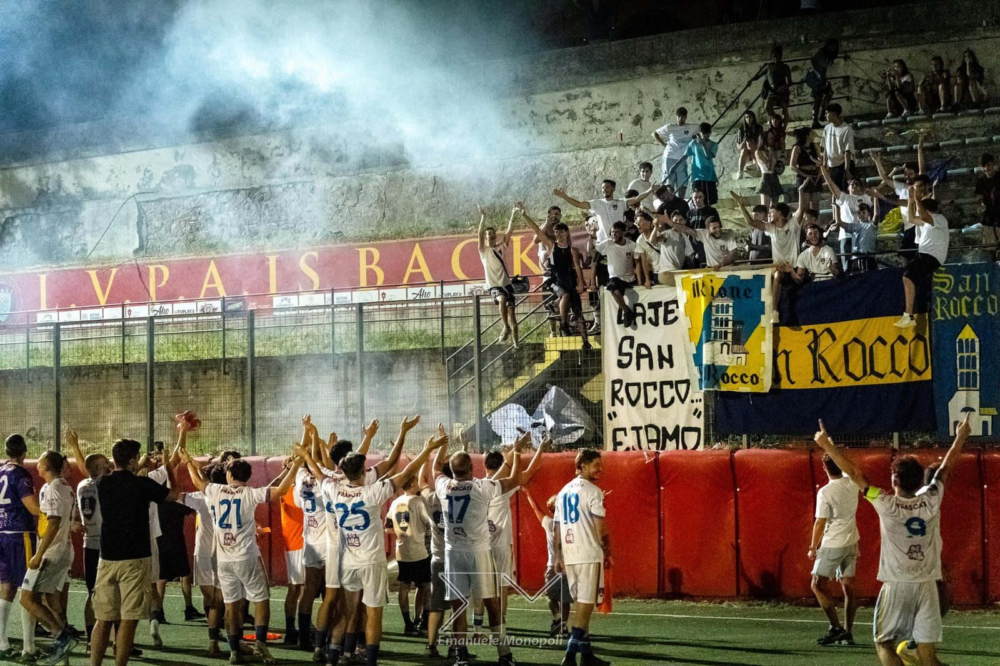
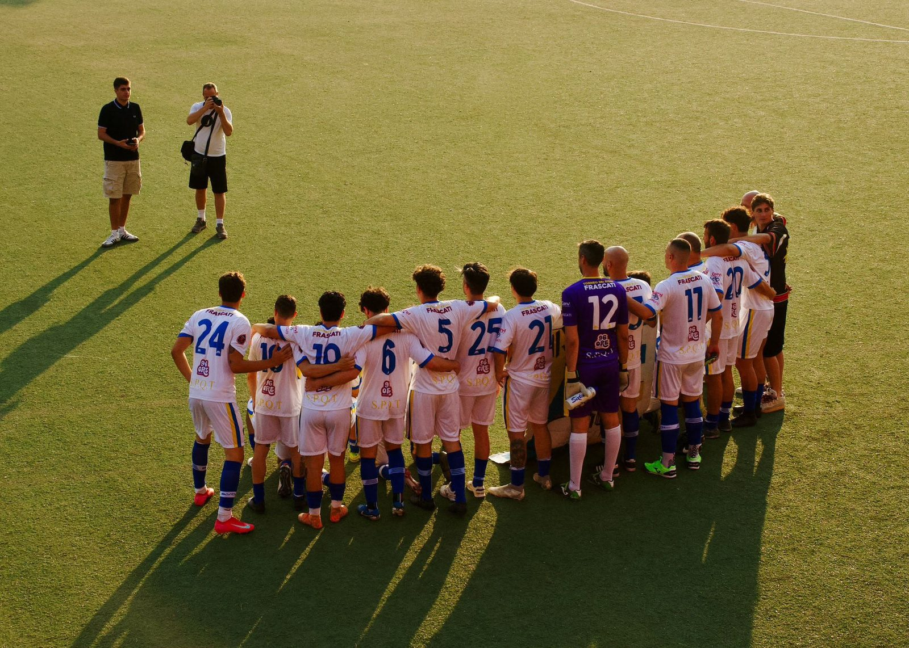
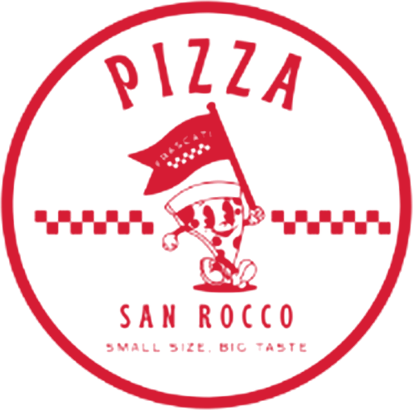

2025
Campioni e Supercoppa
Vinciamo il primo Torneo dei Rioni: finale il 2 luglio, 1-0. Poi arriva anche la Supercoppa, 2-0 contro la vincitrice dei rioni di Monte Porzio.
Due maglie per il torneo invernale, tutte e due con la fascia sul petto e lo stemma al centro. Davanti Garage, sulla schiena Gluck, sui pantaloncini Pizza San Rocco.
Striscioni dipinti a mano, bandiere, cori dal primo all'ultimo minuto. Il San Rocco è prima di tutto la sua gente: ragazzi, famiglie, chi il rione lo vive da una vita.



La rosa di Piazza San Rocco per la Frascati Cup, il torneo invernale di calciotto, da ottobre a marzo. Nomi e numeri ufficiali in arrivo.
D'inverno si gioca a calciotto: otto contro otto, campo più stretto, ritmo più alto. In campo scendiamo come Piazza San Rocco.
| Giornata | Data e ora | Avversario | Risultato |
|---|---|---|---|
| 1 | [DATA · ORA] | [AVVERSARIO] | – |
| 2 | [DATA · ORA] | [AVVERSARIO] | – |
| 3 | [DATA · ORA] | [AVVERSARIO] | – |
Il calendario ufficiale esce a breve. Date, orari e risultati li trovi aggiornati qui e nelle storie di @rionesanrocco.
Dieci rioni, uno stadio, un mese di partite all'8 Settembre. Il San Rocco c'è dalla prima edizione, con la sua gente sempre dietro la rete.
Vinciamo il primo Torneo dei Rioni: finale il 2 luglio, 1-0. Poi arriva anche la Supercoppa, 2-0 contro la vincitrice dei rioni di Monte Porzio.
Dieci rioni in campo. Ci fermiamo a un passo dalla finale. Nello sport si vince e si perde.
Il torneo invernale di calciotto a 8, da ottobre a marzo. Deve ancora cominciare: la storia è tutta da scrivere.
In caricamento...
Prima e dopo la partita, ci vediamo al Garage.
@garagesanroccoPiccola di formato, grande di gusto.
@pizza_sanrocco_frascati
Hai un'attività a Frascati e vuoi stare al fianco del rione? Scrivici, ne parliamo volentieri.
Scrivici su Instagram